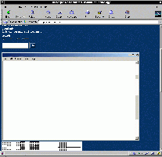

| C O N T A C T I N F O | |||
| postal | - | Scott
Johnston 375 Elliot Street Suite 130K Newton Upper Falls, MA 02464 | |
| - | johnston@mit.edu | ||
| telephone | - | (617)
369-0733 [cruftlabs] (617) 965-8209 [office] | |
| (and no more letter bombs, OK?!) | |||
July 7, 2004
The Coca-Cola "Unexpected Summer" GPS-can promotion is
a threat to
national security. Ha.
I computed some statistics on my e-mail spam today. The seven-day average for spam received by my MIT address is 164.7 messages a day. That's a dramatic increase from my Nov 1-7 2003 average of 47.9 spam messages daily.
And yet people ridicule me for using TMDA.
July 6, 2004
Another July 4 came and went. An excellent time was
had by all (I assume) with dinner at the Pour House and fireworks-watching from
the water.
I didn't build a boat this year, so five friends and I went out in a pair of inflatable rafts. Greddy and Steve built a cool craft with a plexiglass deck. McBean was flying the Canadian flag from the crow's nest atop his triangular raft.
Although the MITERS boats sailed uneventfully east of the fireworks barge, apparently the East Campus crowd didn't fare so well. At least one raft (a deck mounted on sketchy oil drums) was escorted from the water by State Police patrol boats. After reaching shore, those folks were presented with "release forms" to sign, which must have raised some stress levels! But as it turns out, the State Police were being shadowed by camera crews for one of those "Cops" shows, who needed the signatures of the guilty to put the whole act on television. Stay tuned. Another group from East Campus was forced underground by continued threats from MIT administrators (mostly the MIT Housing Office). Having thought they claimed victory by sneaking their craft off campus and down to the public dock near the Galleria, they were surprised when yet more State Police (rumored to have been acting on instructions from MIT) forced them to give up. I'm not clear on the eventual fate of their boat, but they weren't allowed in the water.
McBean spent the entire day on the Charles, which meant he was hassled at least 10 different times by various waterborne authorities. In one encounter with the MDC patrol boat, the cop mentioned that some group had tried to launch a "floating couch" from the Esplanade side of the river, but they were caught in time.
If imitation is the sincerest form of flattery, I am deeply honored.
July 1, 2004
I'm having a bad case of boat jealousy. For various
reasons, I'm not really building one this year. Though I'm planning to help
Quinn and Harvey with their barge-o'-astroturf.
At the labs, G-Funk and British Steve are building an interesting catamaran of plywood, sporting curves meticulously computed by Steve with his mad Matlab skills. I'm a little concerned about how they plan to seal the keel, but overall it's a pretty sweet endeavour.
McBean and his ladyfriend are almost done with their craft, an equilateral triangular platform supporting a 10' tall observation tower. It was sort of inspired by an oil rig.
Next year, I'm going nuts.
June 31, 2004
Curiously, nothing happened on this day.
June 30, 2004 Oh, just kidding.
I read an article in a trade magazine today about electronics manufacturing
in China. The productivity of these people is amazing. The author briefly
described two typical assembly workers. One inserts pins into USB connectors all
day. She installs eight thousand pins a day. Another crimps tiny pins
onto the ends of wires for use with another type of connector. She does
eleven thousand of these in a shift.
June 29, 2004 June 27, 2004
The "translation" they ran is even funnier.
Snoop Dogg's car consultant, "Big Slice," was quoted in the New
York Times as saying "I wouldn't buy the Magnum without the Hemi. The car
looks like it needs to go, so you might as well put the go in it."
The funny thing about this yearning for the Hemi -- a hemispherical
combustion chamber design that was revolutionary in the 1960's -- is that it is
a big piece of shit by today's standards. In fact, in order to meet modern
emissions requirements with this design, Chrysler had to put two spark
plugs in each cylinder. Without the second flame front, it suffers from
incomplete combustion.
Chrysler's marketing genius has taken something boring and undesirable and
turned it into a much sought-after commodity that people dream about. I
should get them to help me with my foray into online dating.
June 26, 2004 His explanation
of Memorial Day is both enlightening and very moving. The same goes for his
remarks
on the 60th anniversary of D-Day. The last paragraphs of his comments on the
torture of Iraqi prisoners, "Our
Darkest Days Are Here, are so powerful that they elude summary.
Regular readers of this space are probably tired of the seemingly endless
praise I heap upon Mr. Rooney. But while the prolification of "experts" and
"pundits" has made television news almost completely irrelevant -- especially cable news -- we all have something to gain
from that the medium still carries the voice of someone old enough to know
history, and its relevance to our modern lives, firsthand.
Sharing this kind of knowledge in a personally relevant way is magic.
Last month, I flew to Minneapolis for the funeral of my grandfather. Prior to
his career as a machinist, woodworker, and inventor, he served in the Navy
during World War II. Nobody knew much more than that, and he wasn't interested
in talking about it, either. (He had a "difficult" personality, although the two
of us had nothing short of mutual admiration for each other.)
So it was an eye-opening experience to sit in his basement the day before the
funeral, leafing through the WWII photo album he would never let anyone look at.
His discharge papers listed him as a "projectionist," but somehow or another he
wound up delivering play-by-play baseball coverage for the Armed Forces Radio
Service. His voice broadcast across Europe. There were photos of him sitting on
a stoop in Italy, smoking a pipe, mimicing an old wartime portrait of his
father. Dinner menus from mess halls all over the world. The stories that could
have been told!
His War Department is my Defense Department. His Armed Forces Radio Service
is now my American Forces Radio and Television Service. His experiences
were his own, but whatever I had to learn from them is lost to time.
Which should help explain, in part, my fascination with Andy Rooney.
June 24, 2004 It's the story of an 86-year-old mechanical engineer who still works 10-hour
days. He still dates women half his age. He designed the ubiquitous Votomatic
punch-card voting machine in 1963. And, when companies like Diebold are pushing
$4500 computerized voting terminals in the wake of the Florida election debacle
-- despite disturbingly
questionable performance -- he intends to "save democracy" with a simple
$200 mechanical voting machine. Affordable enough for every precinct.
Reliable, trustworthy, and transparent in operation. Simple and easy to use.
Brilliant.
Did I mention this same inventor styles himself after Philo Farnsworth?
I need to meet this guy.
June 23, 2004 June 21, 2004 As luck(?) would have it, I got my dose of bagpipes later in the night, since
Feldmeier was listening to "Tones and
Drones" on WZBC.
June 19, 2004 What these volunteers actually wanted was not my vote, but my money. I don't
have any problem giving money to a cause I believe in, but the fraction of each
dollar that goes to pay for John Kerry's peanut butter sandwiches is
pretty meager, no doubt, compared to what bankrolls the television commercials.
I don't watch television, nor do I revel in its frightening influence.
I mention influence because today I read a Salon.com article, "Kerry
Still Standing Despite Ads' Damage." The article cites a study that proves
the effectiveness of $80 million in TV advertising by the Bush campaign in the
last 3 months. This advertising is apparently as much anti-Kerry as it is
pro-Bush. They mention one example of Senator Kerry being "indecisive" on some
issue or another, which is an even dirtier trick than that which I complained
about last time because it relies completely on the public's ignorance of the
nitty-gritty of parliamentary procedure. Like the simple fact that bills go
through multiple revisions, which wouldn't work at all if people didn't change
their votes. You simply can't pass this off as waffling on the greater issues.
That any of the public was swayed by this argument makes me wonder if the
popular vote is simply a waste of time.
Meanwhile, I'll be keeping an eye on the Goodwill store in case any of those
D.N.C. volunteer jackets show up. I'm determined to stay ahead of this fashion
trend.
June 18, 2004 Choice quotes follow.
Going to an outdoor sporting event must be awfully stressful.
When I was sick as a one-year-old, my parents stayed home to take care of me.
But times are different, I suppose. Last but not least:
These links are all very old. Sorry.
Books: [winter 2003
reading list] [spring 2002
reading list] [fall 2001
reading list]
Here is a casino giving away $25 Free
when you sign up an account.
No credit card required

While everyone is
complaining about the MIT homepage, I thought I'd take a moment to remind you
how terrible it all is without stylesheets. Think of what I have to go through,
people.
Why don't I ever get good messages
on my voicemail? Here's the transcript of one message left for the
German-speaking CEO of Chrysler, Dieter Zetsche, as quoted in The
Detroit News:
"Yo, what up? This is big Snoop Dogg, trying to put these new legs
down for this new 300C. What I gotta' do to get that brand new 300 up outta'
you? Get back in contact with my nephew so you can make it happen, then it's
official like a referee's whistle. If you want this car to blow, give it to
me. This is Snoop Dogg. Preach!"
I spent some time today catching up on
transcripts of Andy Rooney's "60 Minutes" commentaries. People who write him off
as a curmudgeon may not appreciate his sense of humor. But where Rooney really
shines, I think, is when he's being perfectly serious. I will never have his
extraordinary powers of observation, keenness of wit, and remarkably rich life
experiences, but I certainly hope that when I'm 84, I will be as sharp as he is.
I knew my Salon.com
subscription was good for something. "The Last
Lone Inventor" is the best piece of journalism I've read in a long time.
Check out this snazzy new
stylesheet. I call it "shades of gray." Thanks to everyone for their help.
Yesterday, on my way to work (yeah, on
a Sunday), I was stopped by a police roadblock on Beacon Street. My curiosity
was satisfied by the near-simultaneous arrival of a marching band, what turned
out to be the start of Brookline's Flag Day parade.
Having worked for the organizers of several parades in my distant past, I know
better than to run across a parade route, as a couple of impatient folks did. So
I waited on the street corner and watched. The veterans. The gymnasts. The Elks
Lodge Local somethingoranother. The local cycling group, which stopped at my
corner and begged me to join them for the rest of the parade (a duty which I
talked my way out of). Eventually, some dude in combat fatigues driving a
flag-bedecked HMMWV
stopped and waved a bunch of us across the street. So I continued on, even
though the bagpipers were just around the corner.
The other day in Kenmore Square, no
less than four volunteers wearing Democratic National Committee jackets asked me
"Wanna help get Bush out of office?" (Why they ask this and not, "want to help
elect John Kerry," is a good question, but not the one I want to address here.)
The New York Times made my day
with their story on the U.S. Open, "Such Sorrow to
Part With Cellphones."
"If I have a heart attack, who's going to call 911?" said Claudia
Mutter, 50, from Coventry, R.I., who said she was unaware of the cellphone
ban, even though it was printed on the back of tournament tickets. "Seriously,
I have to call home and check on my kids. Now I can't relax."
Doug and Ginny Johnstone, 40, from Wantagh, N.Y., said the ban
made it hard to check on their year-old son, Daniel, who is sick. "It's hard
not having that lifeline," said Ginny Johnstone, who struggled with the pay
phone. "It keeps asking me for more quarters and then cutting me off."
"I have a promotions and marketing company," [Brandon] Yankowitz
said, "and my cellphone is my life."
My Photography: [photojournalism
"exhibit"] [the
good photographs]
Stuff for Me, Mostly: [search
mit libraries without javascript]
Random Compilations of
Information: [sgi o2
resources] [unfucking
pro/engineer] [jobo atl2000]
Pertinent
Links: [defining
cruftlabs] [cruftlabs official site]
[mit east campus] [pi tau zeta]
Other Features:
[ups package tracking]
[The Couchamaran]
[FLASH-ANIMATED
VERSION OF THIS WEB SITE!!!]
Powered by Immovable Type 3.0
<johnston@mit.edu>
{kind=link}
{kind=link}